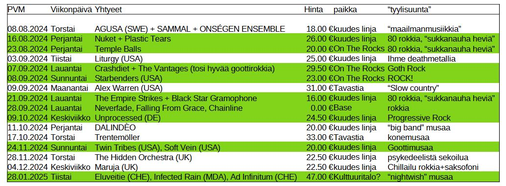

HELSINKI KEIKAT
08.08. AGUSA (SWE) + SAMMAL + ONSÉGEN ENSEMBLE Torstai 18 euroa (maailmanmusiikkia?)
Asunga
Sammal
Onsegen Ensemble
16.08. NUKET + PLASTIC TEARS perjantai 26 euroa (80s rock sukkanauha heviä)
Nuket
Plastic Tears
23.08. Temple Balls, perjantai, ROKKIA! ON THE ROCKS, 20 euroa
Temple Balls
03.09. Liturgy (USA) Tiistai, ihme deathmetallia kuudes linja 25 euroa
Liturgy
07.09. Crashdiet + The Vantages (hyvää goottirokkia), lauantai on the rocks.. 80s rokkia 29,50 euroa
Crashdiet
The Vantages
08.09. Starbenders (USA) lauantai on the rocks, rokkia 23 euroa
Starbenders
09.09. Alex Warren (USA) maanantai tavastialla (hidasta kantria??) 31 euroa
Alex Warren
21.09. THE EMPIRE STRIKES + BLACK STAR GRAMOPHONE, lauantai kuudes linja kallio 16 euroa (80s rokkia)
The Empire Strikes
Black Star Gramophone
28.09. Neverfade, Falling From Grace, Chainline lauantai Base 0 EUROA!
Neverfade
Falling From Grace
Chainline
09.10. UNPROCESSED (DE) keskiviikko , 24,50 euroa (proge musaa)
Unprocessed
11.10. DALINDÈO perjantai , 20 euroa ("big band" musaa)
Dalindeo
17.10. trentemoller tavastia (konemusaa) torstai 33 euroa
Trentemoller
02.11. Wheel, On the rocks, 32,50. "tool tyylistä metallia/rokkia".
24.11. TWIN TRIBES (US) + SOFT VEIN (US) Sunnuntai 20 euroa (gootti musaa)
Twin Tribes
Soft Vein
28.11. THE HIDDEN ORCHESTRA (UK) torstai 22,50 euroa (psykedeelistä sekoilua)
The Hidden Orchestra
04.12. MARUJA (UK) keskiviikko 22,50 euroa (chilliä "rokkia" saksofoonilla)
Maruja
28.01.2025 Eluveitie (CHE), Infected Rain (MDA), Ad Infinitum (CHE) Naislaulaja metallia, Tiistai! 47 euroa
Eluveitie
Infected Rain
Ad Infinitum
